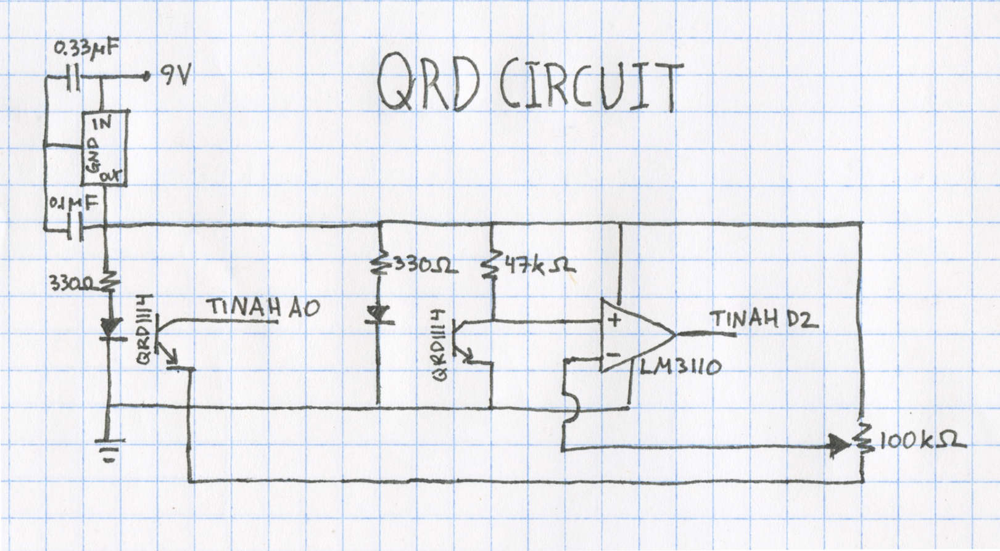
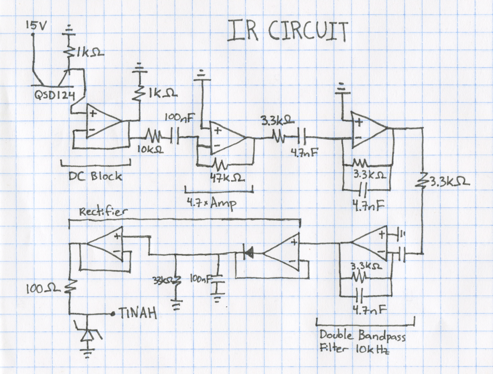
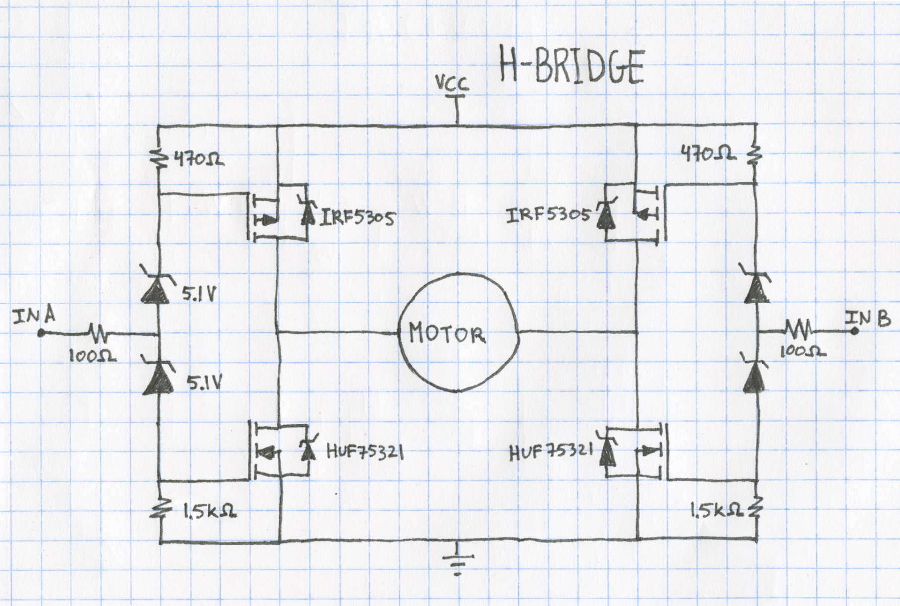
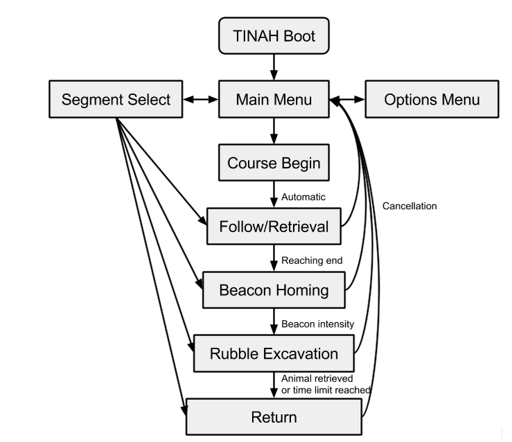
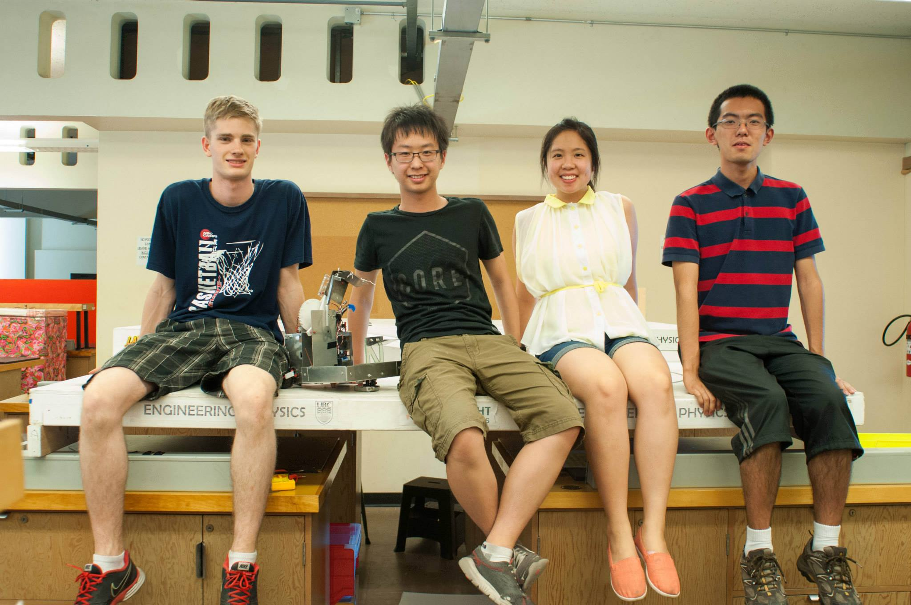

AMPERES is a fully autonomous robot which goes through an obstacle course, picks up stuffed pets, and brings them to a safety zone. It was designed for the 2015 UBC Engineering Physics Robotics competition as a part of the ENPH 253 course in which it placed 4th out of 16 teams.

At the end of second year, UBC Engineering Physics students spend the summer participating in ENPH 253, where they build robots to compete against each other. This year's competition is called "Robot Pet Rescue!".
When and Where: August 6, 2015 at UBC Hennings Building, Room 200
Scenario: A fire has broken out at the SPCA and the animals are scrambling to find safe places to hide! Your robot must enter the building to rescue the trapped pets from their hiding spots before the building goes up in flames. A collapsed water tube serves as convenient zipline for escape, or you can race out the way you came.
Below is shown the playing surface and its features.

The robot must be able to navigate through an 8' by 8' course divided into an upper and lower surface connected by a ramp. There will be a 14" wide, 18" tall doorway 4.5' from the edge of the safe area. An electrical tape path will run from the start area to the beginning of the upper surface. The Path is not guaranteed to be straight at any point, and there is no minimum radius of curvature. There will be rescue beacons at each end of the upper surface. Rescue beacons are IR beacons that will emit a 10 kHz sine wave. Any strategy using the beacons as “remote controls” to communicate with the robot (other than beacon location) is not allowed. There will be 6 pets in total in the locations roughly marked in the diagram above. For complete rules, see here.

Mechanical design was broken into three main sub-assemblies: the chassis, the side arm and the front arm. Each sub-assembly could be constructed separately and basic functionality could be tested.
The chassis consisted of the main body of the robot, PCB storage space, the drive system, the front sled and front brackets for static pet pickup.
The main body of the robot was constructed from aluminium sheet metal, bent into shape and reinforced with brackets and pop rivets. This provided a base for other parts and sub-assemblies to be bolted or pop riveted to and storage space for retrieved pets.
The back section of the chassis was used for PCB storage. A top section was bolted on to provide stability and space for mounting the TINAH. Shelves were slid into slots at the back of the chassis and supported by tabs. These shelves housed the PCBs. The back section was covered with the AMPERES name plate for completeness and to ensure PCBs were contained within the robot.
Two versions of the drive system were designed. The first used holes in the chassis and a supporting bracket for the motor and axel. A wheel encoder was integrated into the power transmission system via gear between the motor and axel. After construction, it was realized that a three gear power transmission system was difficult to properly align, and further proper alignment of holes in the chassis and supporting bracket was nearly impossible to achieve. A second version of the drive system was designed in which the drive system was a self supporting sub-assembly. The encoder and its gear were removed from the power transmission chain and separately meshed with the motor gear. Although we were reasonably confident this second design would be more reliable and easier to fabricate, due to the time constraints of the course and risks of unforeseen challenges when converting to the new drive system, the second design was never fabricated. The drive system was designed with a 3:1 gear ratio to ensure sufficient torque for climbing the ramp. The use of small wheels allowed for a much smaller gear ratio than was required by competing teams.
 The front sled was fabricated from steel
sheet metal so that it could be bent and spot welded. It
included holes and mounts for tape following QRDs (not shown). A
sled was chosen to simplify design and eliminate potential
issues with castor or wheel mounting. The sled pivoted on a
simple axel to allow its bottom to remain flush with the playing
surface while the robot climbed the ramp. This kept the QRDs a
consistent distance from the playing surface to reduce the
occurrence of unexpected sensor readings due to changes in
distance from the surface.
The front sled was fabricated from steel
sheet metal so that it could be bent and spot welded. It
included holes and mounts for tape following QRDs (not shown). A
sled was chosen to simplify design and eliminate potential
issues with castor or wheel mounting. The sled pivoted on a
simple axel to allow its bottom to remain flush with the playing
surface while the robot climbed the ramp. This kept the QRDs a
consistent distance from the playing surface to reduce the
occurrence of unexpected sensor readings due to changes in
distance from the surface.
 Brackets were mounted to the front of the
chassis to allow static pickup of the first and fourth pets.
These brackets consisted of an acrylic mounting bracket and a
steel pickup bracket reinforced with rare earth magnets. The
bracket on the right side of the robot also included a
microswitch and a switch plate so the robot could determine when
it had reached the box containing the sixth pet. The pet on the
bracket would with the box, activating the switch, sending a
signal to the TINAH when the robot was at the box.
Brackets were mounted to the front of the
chassis to allow static pickup of the first and fourth pets.
These brackets consisted of an acrylic mounting bracket and a
steel pickup bracket reinforced with rare earth magnets. The
bracket on the right side of the robot also included a
microswitch and a switch plate so the robot could determine when
it had reached the box containing the sixth pet. The pet on the
bracket would with the box, activating the switch, sending a
signal to the TINAH when the robot was at the box.
In the original design, bent steel rod 'antennae' were intended to be used to mount IR sensors for the IR following section of the course. Early in testing we realised these mounts were not stable enough to aim the highly direction sensitive IR sensors we were using. A ridged meccano structure was built to support the IR sensors with LED holders to aim the sensors through a drilled out hole in the meccano.
The base of the side arm was constructed from aluminum sheet metal. Its purpose was to allow the arm's pivot point to be at a height such that is could reach the surface-level and elevated pets from approximately the same distance. The arm itself consisted of two linkages that were out of plane. The first linkage was integrated into a large gear to allow a DC motor to rotate the arm through a 6.5:1 gear ratio and the second simply rotated and helped to support the arm. This allowed the arm to rotate approximately 180 degrees in one plane without interfering with itself. Arm linkage lengths were chosen such that then pickup surface remained horizontal throughout arm rotation. The linkages were waterjet cut polycarbonate. The end of the arm consisted of a housing for the ends of the linkages, a rare earth magnet reinforced steel L-bracket and an aluminum flap below it. The housing consisted of steel rods to attach the linkages, threaded on each end, and acrylic panels bolted to the steel rods. aluminum flap served two purposes: it triggered a microswitch so the robot would know when it had picked up a pet and it allowed for a wedge to remove the pet from the arm when safely above the chassis.
The front arm was designed to collet pet six. The arm was 12.5"
long so that it could reach down into the box. The arm was
driven by a geared DC motor through a 5:1 gear ratio to ensure
sufficient torque. The arm and its body were constructed from
aluminum sheet metal and five large rare earth magnets were
attached to the end of the arm.
Electrical parts were built to navigate through the obstace course, to sense when pets have been picked up, and to control the motors in AMPERES. All of the electrical circuits used were manually soldered onto PCBs and are controlled by an ATMega128-based board called the TINAH.
AMPERES uses a combination of tape following and IR following to navigate through the course.
Four QRD1114 phototransistors, which read reflectance values to detect the tape on the playing surface, were placed under the robot. Two are mounted on the front sled for tape following, and work in conjunction with wheel encoders to ensure efficient tape following. Two were on the sides to detect the orthogonal tape used to detect positions of the pet. Below is the QRD sensor circuit schema.
Two front-facing QSD124 IR photodiodes for detecting the 10kHz rescue beacon were be used to triangulate the distance and angle of the beacon. Below is the IR detection circuit schema.
A microswitch is attached to the actuator arm’s and is triggered when a pet is attached to it. This is used to determine whether the pet has been picked up and when it is removed by the shearing pole. The front of the robot also has a microswitch, which is triggered when the robot hits the box at the end of the course containing the last pet.
Two motors are used for driving, each powering one wheel using differential steering. The two arms used to lift up pets are also each powered by a motor. Every motor is connected to a motor output on TINAH via an external H-bridge with a comparator attached. Similarly, another H-bridge is used for actuating the arm for picking up pets. The H-Bridge design we used were designed by an ENPH 253 teaching assistant, Scott Lawson, and is shown below.
The code used to run AMPERES can be found here.
As discussed in the design report, the software was planned to run on a simple state machine as shown below.
However, due to difficulties in maintaining the state machine, a rudimentary asynchrony framework was developed in order to simplify its programming. Commands are loaded onto a virtual "tape", along with a predefined end condition.
struct If
{
inline If(Condition type, int16_t arg = 0);
uint8_t eval() const;
void init() const;
Condition type;
int16_t arg;
};
enum CMD_TYPE : uint8_t
{
FORK = 0,
EXEC = 1,
BRANCH = 2,
END = 3
};
struct Command
{
CMD_TYPE cmd_type;
union
{
uint8_t (*Action)(uint8_t begin, uint16_t meta);
int8_t addr;
} target;
If if_;
uint16_t metadata;
};
Command program[256];
Upon reaching the end condition, the instruction pointer advances to execute the next command.
The end condition is evaluated by the If struct.
Each command is called once every loop, and an additional flag begin is passed if the command is being called for the first time.
Additionally, because commands are designed to be non-blocking, multiple commands can be executed in parallel, each with their own end conditions.
The wheel encoders were connected to external interrupt-enabled pins. This allowed the wheels to spin at a rate independent of the software polling frequency.
void attach_pin(uint8_t pin, uint8_t mode)
{
if (pin > 3 || mode > 3 || mode == 1) return;
cli();
EIMSK |= (1 << pin);
EICRA &= ~(1 << (pin * 2));
EICRA &= ~(1 << (pin * 2 + 1));
EICRA |= (mode & (1 << 1)) << (pin * 2);
EICRA |= (mode & (1 << 0)) << (pin * 2 + 1);
sei();
}
Although there were noise problems with the encoders, they worked well enough for our purposes.
Analog input was reimplemented for speed improvements. Instead of blocking until the analog-to-digital conversion finishes, the ADC polls continuously in the background and cycles through all eight inputs. An interrupt triggering upon completion of a conversion starts the conversion on the next pin. This way, the cost of reading from analog inputs is greatly decreased.
void start_adc()
{
// set the analog reference (high two bits of ADMUX) and select the
// channel (low 4 bits), and ADLAR to 0
ADMUX = (1 << 6) | (analog_roundrobin & 0x07);
// start the conversion
ADCSRA |= 1 << ADSC;
}
void end_adc()
{
uint8_t low, high;
low = ADCL;
high = ADCH;
analog_pins[analog_roundrobin++] = (high << 8) | low;
if (analog_roundrobin >= 8)
{
analog_roundrobin = 0;
}
start_adc();
}
ISR(ADC_vect)
{
end_adc();
}
After all those hours of Solidwork-ing, soldering, fabricating, coding, and putting everything together, can the robot we built in six weeks really rescue pets in a "burning building"? Yes it can! By the time the ENPH 253 comptition came around, AMPERES was consistantly able to pick up all six pets on the obstacle course. Proof: A (blurry) video from the competition day.
And here's a much clearer video of AMPERES picking up five pets on Week 4.
That was before the front arm to pick up the last pet was built. We orignally planned to have an arm attatch to the zipline and slide down to the saefy zone, but found that the robot can travel fast enough to return to the safety zone via the tape path before the Wall-of-Fire, which activates at the 60 second mark, goes up. Hence, we used the space to build an extra arm dedicated to picking up the last pet, which is in the box of rubble.
AMPERES made it to the semi-final round of the competition, and ended up in fourth place out of the sixteen competing teams. We had a great time designing and building our robot, and would like to thank our instructors (Andre Marziali, Jon Nakane, Bernhard Zender) and teaching assistants (Scott Lawson, Kevin Poon, Zendai Kashino) for always being readily availiable to help out and making the course an incredible experience, as well as our classmates for being a fun and supportive bunch who put up a good competition!
